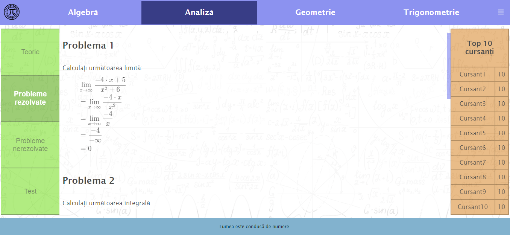

MEGa - Math Equation Game este o aplicație web ce oferă o interfață prietenoasă și diferite metode de a dobândi cunoștințe din 4 domenii ale matematicii: Algebră, Analiză, Geometrie și Trigonometrie.
1. Introducere
MEGa - Math Equation Game este o aplicație web ce are ca scop oferirea unui mediu de invățare interactiv, dezvoltarea spiritului competitiv al utilizatorilor prin întocmirea unui clasament pe baza punctajelor obținute prin rezolvarea exercițiilor și testelor
puse la dispoziție în fiecare categorie, și, de asemenea, prin rezolvarea chestionarelor temporizate ce au ca scop verificarea cunoștințelor dobândite prin parcurgerea teoriei.
1.1 Scop
Scopul acestui document este de a prezenta funcționalitățile site-ului MEGa. Conține informații legate de obiectivul și modul de utilizare al site-ului de către utilizatori.
Site-ul are ca intenție dezvoltarea cunoștințelor în domeniul matematicii prin punerea la dispoziție a teoriei și exercițiilor. De asemenea, prin generarea de chestionare temporizate site-ul are ca scop dezvoltarea gândirii rapide, iar obținerea punctajelor
și dispunerea unui clasament sporește competitivitatea utilizatorilor.
Site-ul oferă diverse exerciții structurate în 4 categorii: algebră, analiză, geometrie și trigonometrie. Fiecare categorie dispune clasamentul actualizat în timp real, și de asemenea, dispune de o secțiune de teorie, pe care utilizatorul o poate accesa
oricând pentru reîmprospătarea cunoștințelor.
Idealul aplicației web este dezvoltarea cunoștințelor din domeniul matematic al utilizatorilor într-o manieră interactivă, sporindu-le interesul și competitivitatea.
Aplicația dispune de următoarele funcționalități: crearea unui cont, logarea în aplicație cu un cont existent, dispunerea suportului teoretic, al exercițiilor, testelor și al chestionarelor temporizate, vizualizarea clasamentului în timp real, adăugarea
de exerciții noi. De asemenea, aplicația pune la dispoziția utilizatorului o zonă de relaxare disponibilă pe pagina principală.
2.2 Documentația utilizatorului
Documentația utilizatorului privind exercițiile poate fi regăsită în secțiunea teoretică a fiecărei categorii.
3. Interfețele utilizatorului
Pagina principală
Pagina principală
În momentul accesării aplicației utilizatorul este redirecționat pe pagina principală. Aici el dispune de zona de relaxare, având acces la jocul X și 0, jucându-se cu ajutorul cursorului, unde are mereu prima mutare. De asemenea, el poate fi redirecționat
către testul fulger, dând click pe ceas.
Test fulger
Test fulger
Accesând testul fulger, utilizatorul va primi cinci întrebări cu câte patru variante de răspuns, din categoriile disponibile în aplicație: algebră, analiză, geometrie și trigonometrie. Testul este cronometrat, acesta având la dispoziție 80 de secunde
pentru a-l rezolva. În cazul în care utilizatorul nu reușește să definitiveze testul, punctajul obținut până la expirarea timpului va fi calculat automat. Utilizatorul va răspunde la întrebări selectând variantele de răspuns,
urmând să-și verifice răspunsul apăsând butonul "Verifică răspuns". Dacă utilizatorul termină testul fulger înainte de expirarea timpului, poate să își calculeze punctajul total al testului dând click pe "Calculează punctaj
test".
Categorie - Analiză
Analiză - probleme nerezolvate
Utilizatorul poate accesa o anumită categorie de exerciții, exemplificând aici categoria analiză, toate cele patru categorii fiind asemănătoare și având aceleași opțiuni. În acest exemplu, utilizatorul este autentificat și punctajul obținut în urma rezolvării
unui exercițiu va fi adăugat la punctajul său curent, acesta fiind actualizat în timp real. De asemenea, utilizatorul are opțiunea de a se deconecta, dezavantajul fiind că nu i se va mai aduna punctajul și nu va putea să mai
întreacă alți utilizatori. În cadrul paginii utilizatorul are opțiunea de a adăuga un exercițiu, dând click pe "Adaugă exercițiu", fiind redirecționat pe pagina cu formularul corespunzător.
Categorie - Analiză
Analiză - probleme nerezolvate, utilizator neconectat
Utilizatorul va avea acces la fiecare categorie chiar dacă nu este logat, dezavantajul fiind că nu i se va mai aduna punctajul și nu va putea să mai întreacă alți utilizatori.
Categorie - Analiză
Analiză - test
Utilizatorul poate accesa secțiunea destinată testelor pentru o anumită categorie, dând click pe "Test". Testul se va desfășura în aceleași condiții ca la testul fulger, aici neexistând presiunea timpului.
Categorie - Analiză

Analiză - probleme rezolvate
Utilizatorul poate accesa secțiunea destinată problemelor rezolvate, aici având posibilitatea de a vizualiza niște modele de exerciții rezolvate.
Categorie - Analiză
Analiză - teorie
Utilizatorul poate accesa secțiunea de teorie unde iși poate reîmprospăta cunoștințele.
Categorie - Analiză
Analiză - descărcare clasament CSV
Utilizatorul poate să obțina un fișier CSV(comma separated values) cu clasamentul din momentul descărcării, dând click pe "Top 10 cursanți".
Adaugă exercițiu
Adaugă exercițiu
Utilizatorul poate adăuga exerciții noi în aplicație din toate categoriile disponibile. El dispune de niște butoane cu ajutorul cărora va scrie ecuațiile și variantele de răspuns. Utilizatorul este obligat să completeze toate câmpurile. El trebuie să
introducă un enunț, să bifeze categoria exercițiului, să introducă variantele de răspuns (patru la număr) și să le bifeze pe cele corecte, după care va trimite exercițiul dând click pe "Trimite exercițiul".